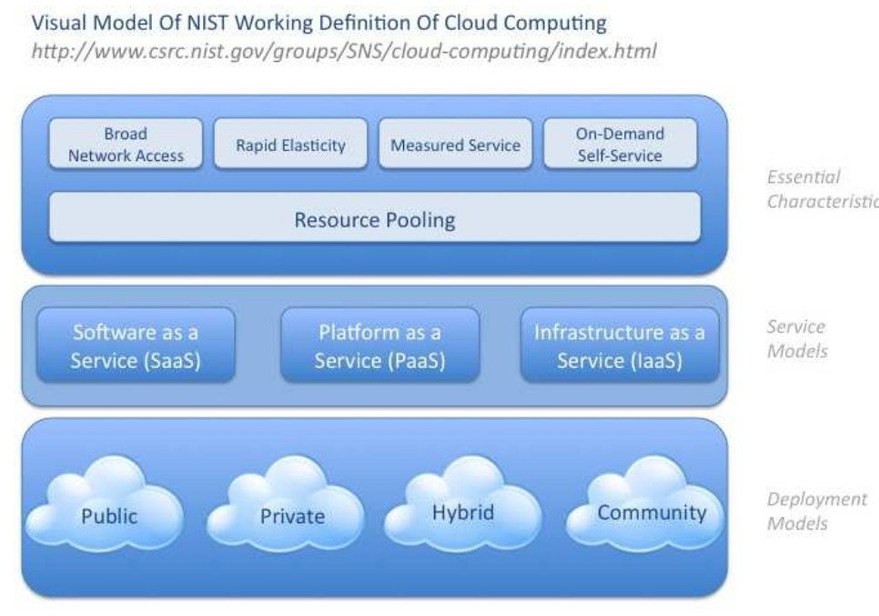

¿Qué es un IaaS?
Un IaaS (Infrastructure as a service) es una infraestructura IT, una "nube", que ofrece un servicio (capacidades de computo, almacenamiento y redes -máquinas virtuales-) con las caráctesticas que se han explicado en el apartado anterior.
-
Servicio disponible de forma automática y bajo demanda (On-demand self-service)
- Un usuario puede comenzar a utilizar un recurso (almacenamiento, aplicación, máquina virtual, etc.) sin necesidad interactuar con operador de la empresa que ofrece el servicio cloud .
-
Accesible a través de red (Broad network access)
- Acceso a los servicios a través de una red usando distintos tipos de clientes (PC, portátil, móvil, tableta, ...)
-
Los recursos se agrupan en pools (Resource pooling)
- El proveedor del cloud ofrece recursos (capacidad de computo, almacenamiento, ancho de banda, ...) a los usuarios.
- Los recursos se agrupan en pools y son ofrecidos según un modelo multi-tenant.
- Diferentes recursos reales y virtuales son asignados y reasignados a los clientes bajo demanda.
- Cada usuario/cliente se denomina “tenant”.
- Los recursos son “virtualizados”, cada recurso real es utilizado concurrentemente por varios “tenant”.
- Se debe garantizar separación, aislamiento, seguridad y privacidad.
-
Elasticidad (Rapid elasticity)
- Asignar/desasignar recursos rápidamente (preferiblemente de forma automática) según las necesidades del usuario.
- Adaptación de los recursos usados frente a demandas cambiantes.
- Aprovisionamiento frente a solicitudes de demanda dinámicas: "recursos ilimitados".
- Escalado vertical (scale up/scale down)
- Escalado horizontal (scale out/scale in)
- Asignar/desasignar recursos rápidamente (preferiblemente de forma automática) según las necesidades del usuario.
-
Servicio medido (Measured Service)
- El uso de los recursos por parte de los usuarios se puede medir facilitando su control y optimización.
- Pago por uso de recursos en entornos comerciales.

El alojamiento, la administración y el mantenimiento del hardware que la sustenta recaen completamente en manos del proveedor del servicio.
Puedes consultar los siguientes enlaces para más infiormación.